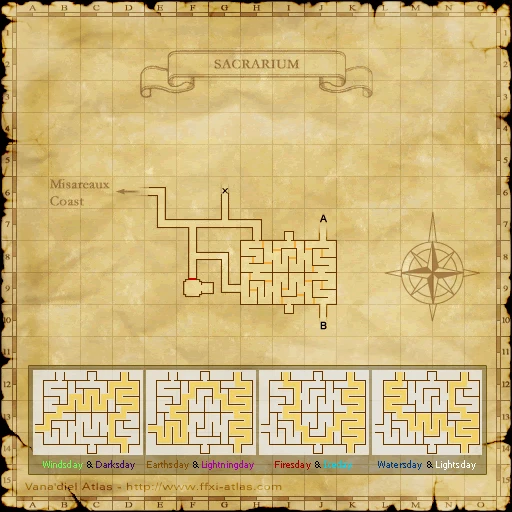
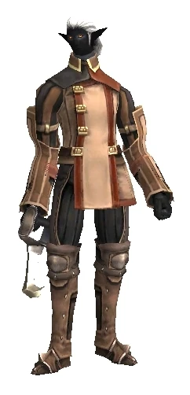
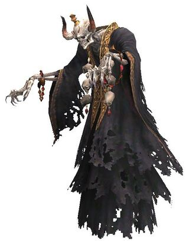
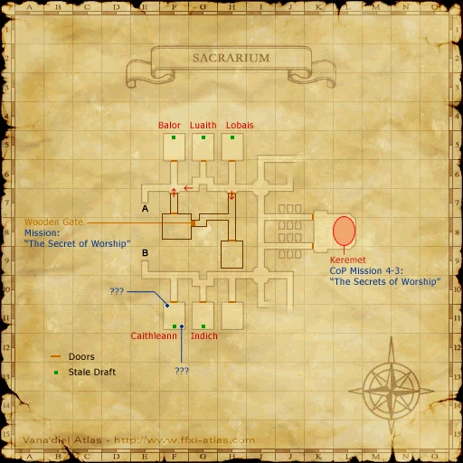
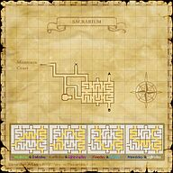
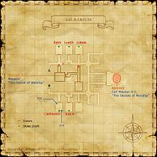

Description
Sacrarium is a dungeon in Tavnazian Archipelago.
Map

Involved in Quests / Missions
| Quest / Mission | Type | Starter | Location |
|---|---|---|---|
| Brygid the Stylist Returns | General | Brygid | Bastok Markets (K-9) |
| Paradise, Salvation, and Maps | Map | Nivorajean | Tavnazian Safehold (I-9) |
| Secrets of Ovens Lost | General | Jonette | Tavnazian Safehold (G-9) |
Notorious Monsters
| Name | Level | Drops | Steal | Family | Spawns | Notes |
|---|---|---|---|---|---|---|
| Balor | 59 | Swift Belt | — |  FomorsImage source | — | Hume (F-5); A, HP |
| Caithleann | 59 | Swift Belt | — | FomorsImage source | — | Mithra (F-11); A, HP |
| Elel | — | Corse Bracelet Frenzy Sallet Magical Mitts | — |  CorsesImage source | — | — |
| Indich | 59 | Swift Belt | — | FomorsImage source | — | Galka (G-11); A, HP |
| Lobais | 59 | Swift Belt | — | FomorsImage source | — | Tarutaru (H-5); A, HP |
| Luaith | 59 | Swift Belt | — | FomorsImage source | — | Elvaan (G-5); A, HP |
Regular Monsters


Event Monsters
| Name | Level | Drops | Steal | Family | Spawns | Notes |
|---|---|---|---|---|---|---|
| Keremet | 56-58 | Sealion Crest Key | — | CorsesImage source | 1 | Killed for Mission: The Secrets of Worship; Assisted by: Azren Kuba (x6) and Azren Kuguza (x6); A, H, HP |
| Old Professor Mariselle | — | — | — |  GhostsImage source GhostsImage source | 1 | Spawned Mission: The Secrets of Worship; Assisted by: Mariselle's Pupil; A, T(H), HP |
Maps

Story walkthroughs in this area
| Story | Mission / quest |
|---|---|
| CoP 4-2 | The Savage |
| CoP 4-3 | The Secrets of Worship |
References
External references describe their own server or retail rules. Documented Zenith changes take precedence.
Map credits: Map 1 — HorizonXI Wiki · Map 2 — HorizonXI Wiki. Original game maps © SQUARE ENIX; redrawn maps retain the credited authorship and license.


Additional level-75 reference




|
Eerily reminiscent of the Phomiuna Aqueducts, this area is also part of the Tavnazian Cathedral. While there are fewer Fomor parties roaming around, the upper floor's hallways are patrolled by true-sight tauri. The lower floor is accessible only by navigating a trecherous maze. This is a level 50 capped area Connecting Areas
|
Involved in Quests/Missions
| Quest | Type | Starter | Location |
| Brygid the Stylist Returns | General | Brygid | Bastok Markets (K-9) |
| Paradise, Salvation, and Maps | Map | Nivorajean | Tavnazian Safehold (I-9) |
| Secrets of Ovens Lost | General | Jonette | Tavnazian Safehold (G-9) |
| Mission | Country | Starter | Location |
| Promathia Mission 4-3:The Secrets of Worship | Promathia | --- | --- |
Coffer/Chest Contents
|
Weather
| |||||||||||
Notorious Monsters Found Here
|
Name |
Level |
Drops |
Steal |
Family |
Spawns |
Notes | |||||||
| Balor | 59 - 59 | Fomor | 1 | F-5 Hume | |||||||||
| Caithleann | 59 - 59 | Fomor | 1 | F-11 Mithra | |||||||||
| Elel | Unknown | Corse | 1 | ||||||||||
| Indich | 59 - 59 | Fomor | 1 | G-11 Galka | |||||||||
| Keremet | 56 - 58 | Corse | 1 | ||||||||||
| Lobais | 59 - 59 | Fomor | 1 | H-5 Tarutaru | |||||||||
| Luaith | 59 - 59 | Fomor | 1 | G-5 Elvaan | |||||||||
| Old Professor Mariselle | Unknown | Ghost | 1 | ||||||||||
| Mariselle's Pupil | Unknown | Ghost | 2
Assists: Old Professor Mariselle |
A, H, HP | |||||||||
|
HP = Detects Low HP; M = Detects Magic; Sc = Follows by Scent; T(S) = True-sight; T(H) = True-hearing JA = Detects job abilities; WS = Detects weaponskills; Z(D) = Asleep in Daytime; Z(N) = Asleep at Nighttime | |||||||||||||
Mobs Found Here
|
Name |
Level |
Drops |
Steal |
Family |
Spawns |
Notes | |||||||
| Air Elemental | 59 - 60 | Elemental | 2 | M | |||||||||
| Azren Kuba | Unknown | Skeleton | 6
Respawn:20 minutes |
H HP | |||||||||
| Azren Kuguza | Unknown | Skeleton | 6
Respawn:20 minutes |
H HP | |||||||||
| Blubber Eyes | 57 - 59 | Hecteyes | 9 | A, H | |||||||||
| Dark Elemental | 59 - 60 | Elemental | 2 | M | |||||||||
| Fomor Bard | 54 - 58 | Fomor | 6
Respawn:16 minutes |
A, L, H, HP | |||||||||
| Fomor Beastmaster | 54 - 58 | Fomor | 3
Assisted By: Fomor's Bat |
A, L, H, HP | |||||||||
| Fomor Black Mage | 54 - 58 | Fomor | 5
Respawn:16 minutes |
A, L, H, HP | |||||||||
| Fomor Dark Knight | 54 - 58 | Fomor | 5
Respawn:16 minutes |
A, L, H, HP | |||||||||
| Fomor Dragoon | 54 - 58 | Fomor | 4
Respawn:16 minutes Assisted By: Fomor's Wyvern |
A, L, H, HP | |||||||||
| Fomor Monk | 54 - 58 | Fomor | 5
Respawn:16 minutes |
A, L, H, HP | |||||||||
| Fomor Ninja | 54 - 58 | Fomor | 4
Respawn:16 minutes |
A, L, H, HP | |||||||||
| Fomor Paladin | 54 - 58 | Fomor | 3
Respawn:16 minutes |
A, L, H, HP | |||||||||
| Fomor Ranger | 54 - 58 | Fomor | 8
Respawn:16 minutes |
A, L, H, HP | |||||||||
| Fomor Red Mage | 54 - 58 | Fomor | 5
Respawn:16 minutes |
A, L, H, HP | |||||||||
| Fomor Samurai | 54 - 58 | Fomor | 6
Respawn:16 minutes |
A, L, H, HP | |||||||||
| Fomor Summoner | 54 - 58 | Fomor | 4
Respawn:16 minutes Assisted By: Fomor's Elemental |
A, L, H, HP | |||||||||
| Fomor Thief | 54 - 58 | Fomor | 4
Respawn:16 minutes |
A, L, H, HP | |||||||||
| Fomor Warrior | 54 - 58 | Fomor | 5
Respawn:16 minutes |
A, L, H, HP | |||||||||
| Fomor's Bats | 49 - 51 | Bat Trio | 3
Assists: Fomor Beastmaster |
H | |||||||||
| Fomor's Elemental | 49 - 51 | Elemental | 4
Assists: Fomor Summoner |
H,M | |||||||||
| Fomor's Wyvern | 49 - 51 | Wyvern | 4
Assists: Fomor Dragoon |
||||||||||
| Gazer | 48 - 50 | Hecteyes | 3 | A,H | |||||||||
| Greater Gaylas | 46 - 48 | Bat Trio | 12 | L, H | |||||||||
| Lich | 54 - 56 | Skeleton | 12 | A, H, HP | |||||||||
| Mummy | 54 - 56 | Sacrarium Chest Key | Skeleton | 13 | A, H, HP | ||||||||
| Stegotaur | 47 - 49 | Taurus | 3 | A, L, T | |||||||||
| Teratotaur | 57 - 59 | Taurus | 6 | A, L, T | |||||||||
| Thunder Elemental | 59 - 60 | Elemental | 2 | M | |||||||||
| Utukku | 55 - 55 | Ghost | 6 | A, H, HP | |||||||||
|
HP = Detects Low HP; M = Detects Magic; Sc = Follows by Scent; T(S) = True-sight; T(H) = True-hearing JA = Detects job abilities; WS = Detects weaponskills; Z(D) = Asleep in Daytime; Z(N) = Asleep at Nighttime | |||||||||||||
Adapted from Eden Wiki: Sacrarium · Contributors and history · CC BY-SA 4.0. Revision 45736. Layout, links and optional background text adapted for Zenith.